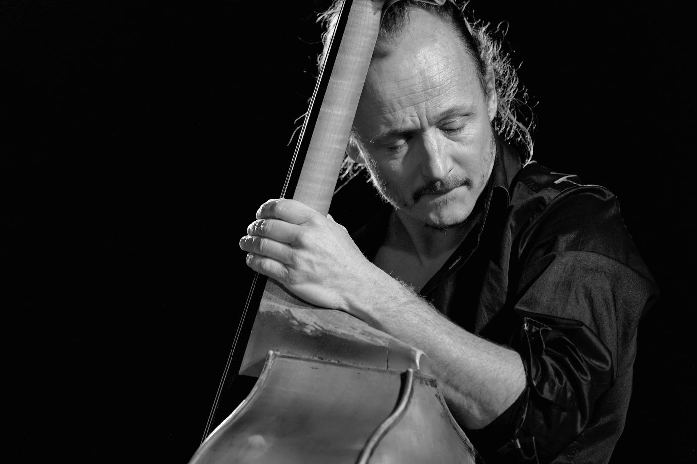
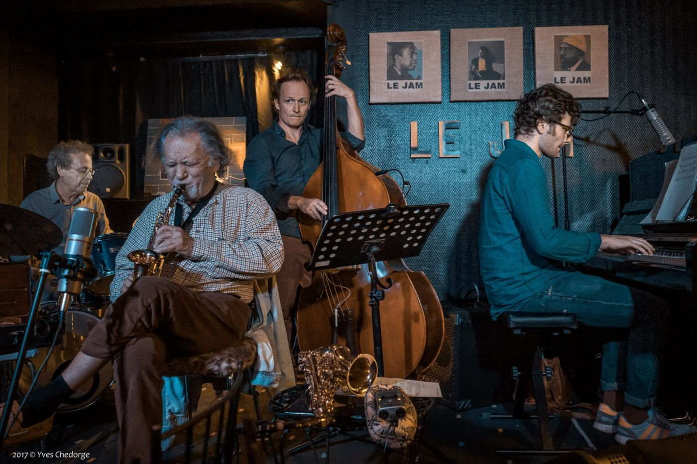
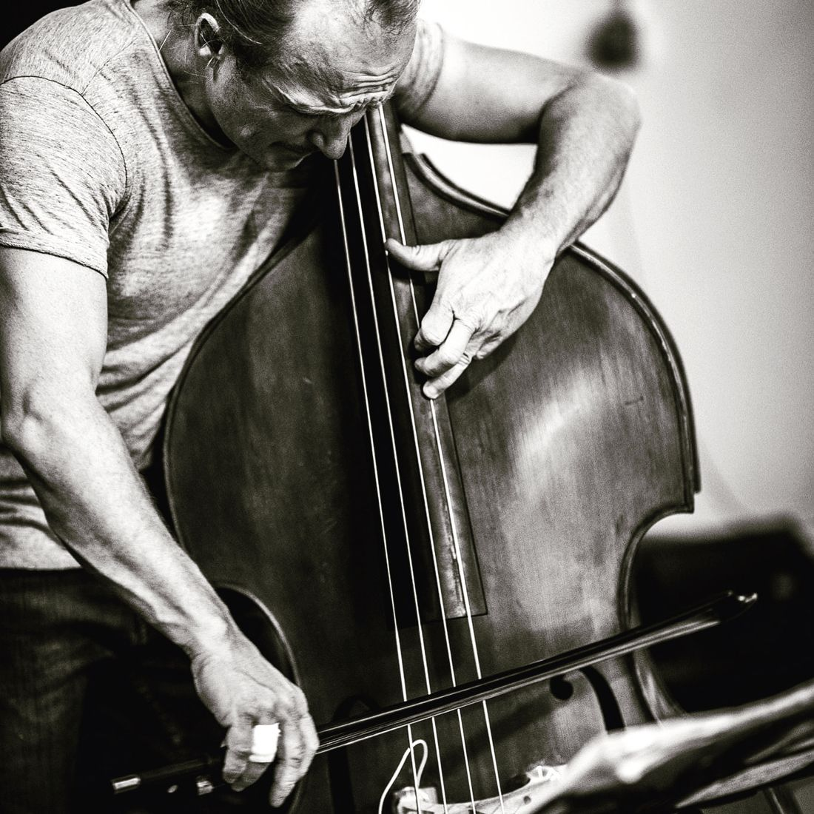
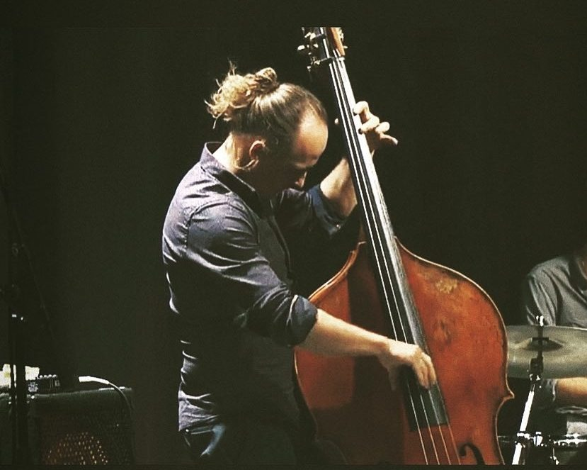

Musique
Contrebassiste de jazz sur la scène marseillaise. J'ai commencé la musique de scène comme percussionniste avec Décor Sonore.

Formation
- 2015 – 2019DEM de contrebasse jazz
Conservatoire de Marseille, classe de Jean-Luc Lafuente.
- 2016 – 2017BEM de contrebasse classique
Conservatoire de Marseille, avec Blandine Lafond-Rive.
- 2014 – 2016IMFP, Salon-de-Provence
Contrebasse jazz avec Michel Zenino.
- StagesFrançois Moutin, Sylvain Romano, Thomas Bramerie, Diego Imbert

Projets
Avec ces formations, j'ai joué notamment au festival Marseille Jazz des cinq continents et dans les clubs parisiens Sunset-Sunside et 38Riv'.
Oni Giri
Quintet de jazz contemporain autour des compositions du pianiste Rémi Denis, avec Christophe Leloil à la trompette et au bugle, Sai Nagoya aux saxophones et David Carniel à la batterie. Une écriture exigeante, des mesures impaires, une large place laissée à l'improvisation et au dialogue entre les instruments.
Deux albums, dont Le Jardin des rêves, enregistré en 2023 au studio La Buissonne avec Gérard de Haro, salué de quatre étoiles par Jazz Magazine. Résidence au Cri du Port à Marseille, concert au Sunside à Paris.

New Thing Septet
Septet de free jazz réuni par Romain Morello, avec le saxophoniste Raphaël Imbert. Un travail sur le free jazz, dans l'héritage de la « New Thing » des années 1960.
Anna Gruzina Quartet
Quartet de jazz de composition autour des pièces de la pianiste et compositrice Anna Gruzina, avec Antoine Lucchini au saxophone et Jérémy Martinez à la batterie. Un répertoire original, entre écriture et improvisation.

Autres projets
- Gurumbé Project
Les racines africaines du flamenco, avec Gil Aniorte Paz.
- Samar
Jazz et influences orientales, avec le pianiste Jérôme Leroy.
- Side man
Guillaume Serre 4tet, Jérôme Mathevon Trio, Longchamp 5 têtes de Nicolas Mouton.